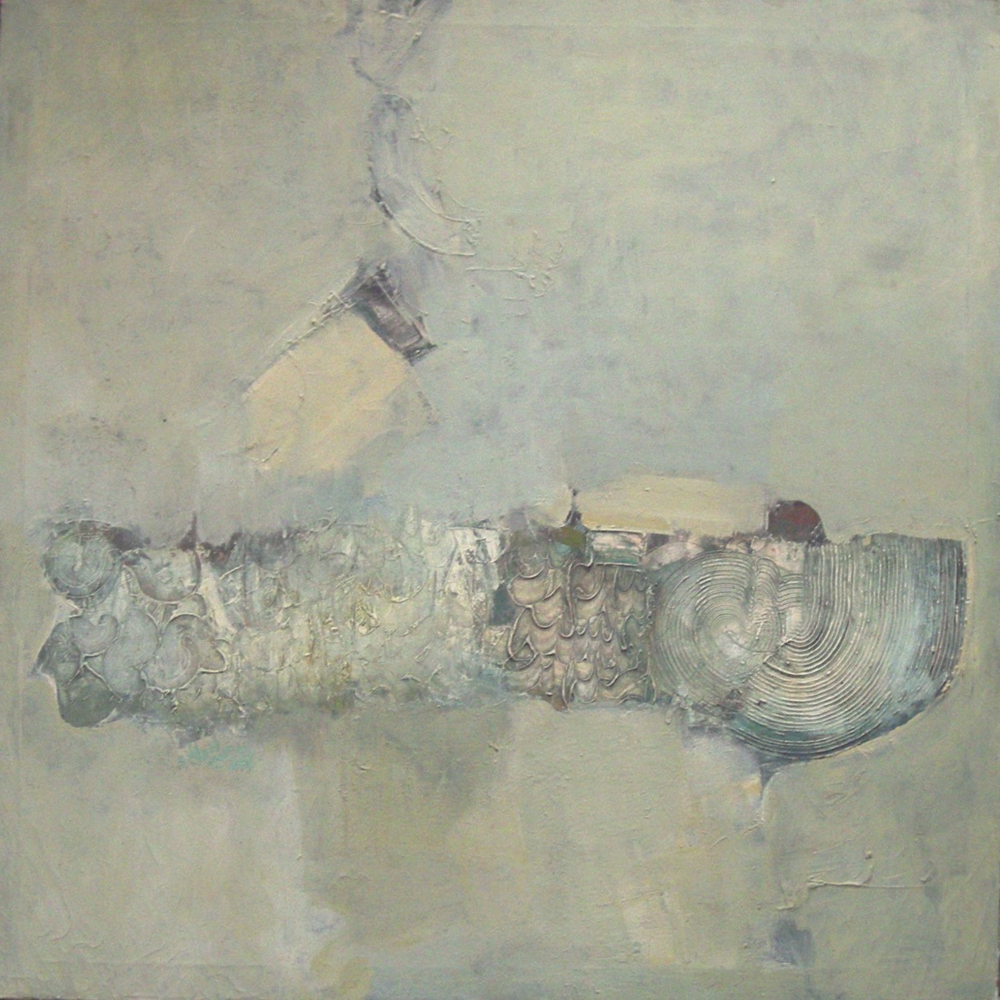

Ahmed Abdel-Aal
1946–2012
Artist Biography
Ahmed Abdul (or Abdel) Aal studied fine arts at the College of Fine and Applied Arts, Khartoum from 1967-71. A multi-disciplinary artist and thinker, Aal took a philiosophy PhD in France and later became Dean at the College of Fine Arts, Khartoum. From the early 1970s Aal aimed to use colour, mass and texture to express what he termed as ‘the Muslim self’. He founded what became the influential School of One group of artists, working in this vein. Aal has had numerous solo exhibitions over the years, beginning with shows at the Grand Hotel, Khartoum from 1963-65. Many were in the wider region, including in Beirut, Damascus, Qatar and Tehran, though he also had two solo shows in Hanover, Germany. One of his works is in the collection of Clare College, Cambridge and this was selected by the artist Oscar Murillo to show in his ‘Art of the Nation’ display at the London Art Fair in 2018.

Untitled, 1980